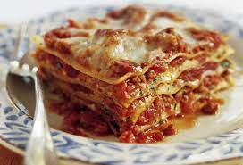

first project
Odin Recipes
Lasagne alla Bolognese

Descrizione
Le lasagne alla bolognese sono un primo piatto tipico,domenicale,della tradizione gastronomica italiana.
E' composto da,almeno,3 strati di sfoglia di pasta fresca,preferibilmente all'uovo come vuole la tradizione,alternati a strati di ragu' e besciamella.
Ingredienti
- 500 gr di lasagne
- 200 gr di parmiggiano grattuggiato
- 1 kg circa di besciamella
- Per il ragu'
- 1 carota
- un po' di pepe
- 1 cipolla
- 4 cucchiai di olio di oliva extravergine
- 1 bicchiere di latte
- 50 gr di burro
- 1 bicchiere di vino rosso
- Sale q.b.
- 100 gr pancetta
- 250 gr polpa di manzo tritata
- 250 gr polpa di suino tritata (coscia)
- 250 ml brodo di carne
- 250 ml passata di pomodoro
- 250 ml (oppure 30 gr di triplo concentrato)